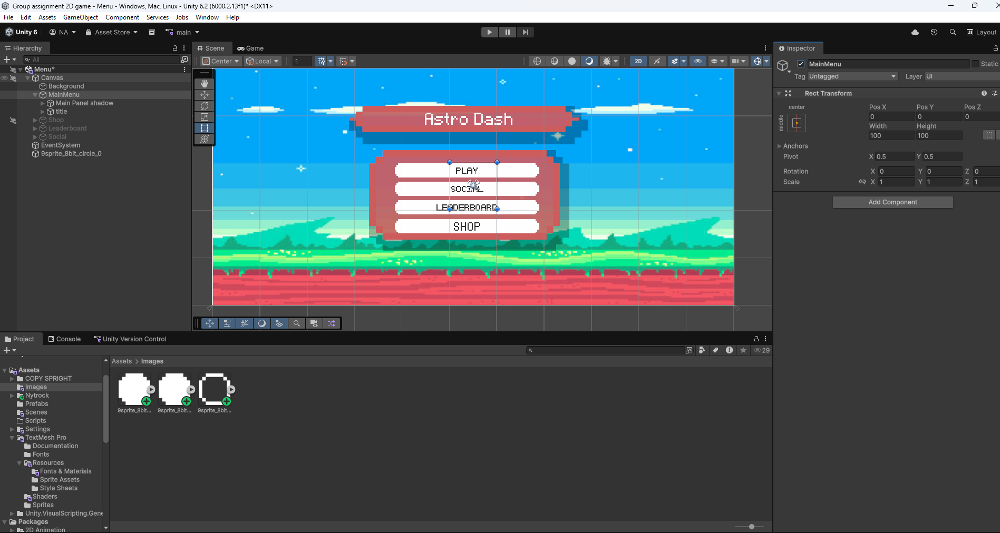
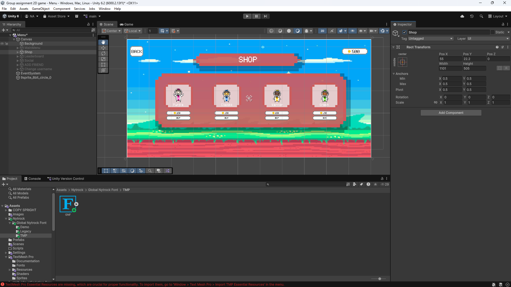
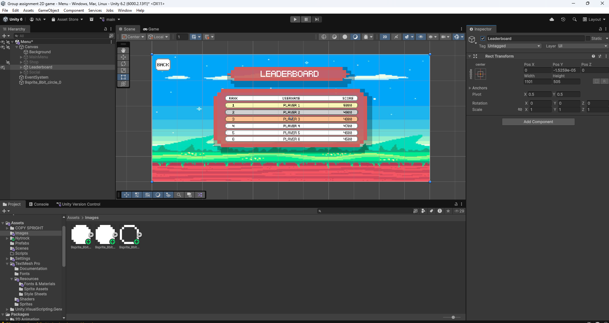
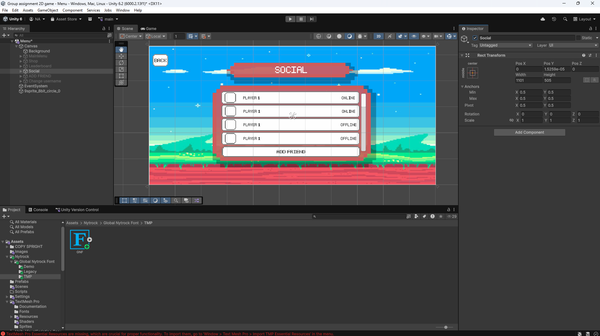
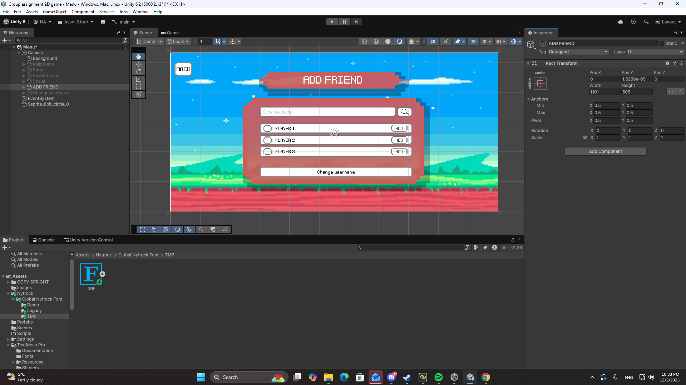
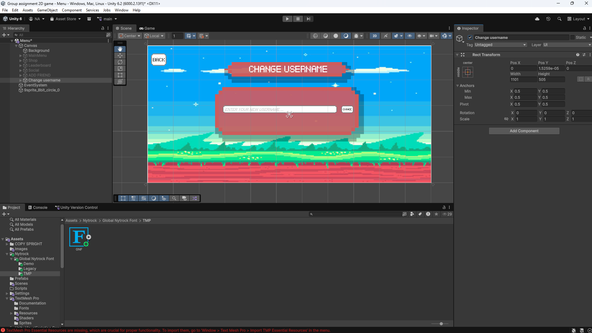

Story 1
"As a gamer, I want a simple input scheme to make the experience easy to get started with"
Implement single-input detection
Create gameplay action triggered by single input
Add visual feedback for input
Led the UI/UX design for a 2D pixel-art arcade game built in Unity. Designed the main menu system, shop, leaderboard, social features, and all in-game interface elements using user-centred design principles.





